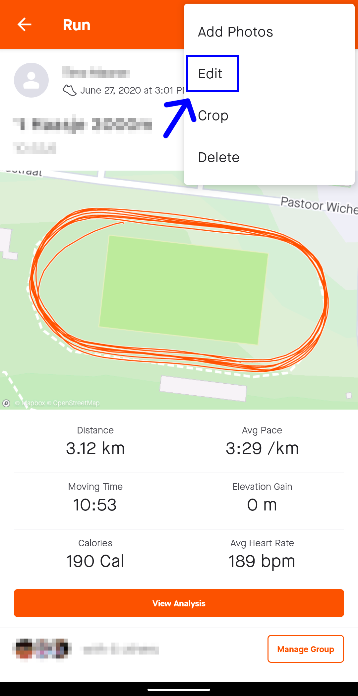
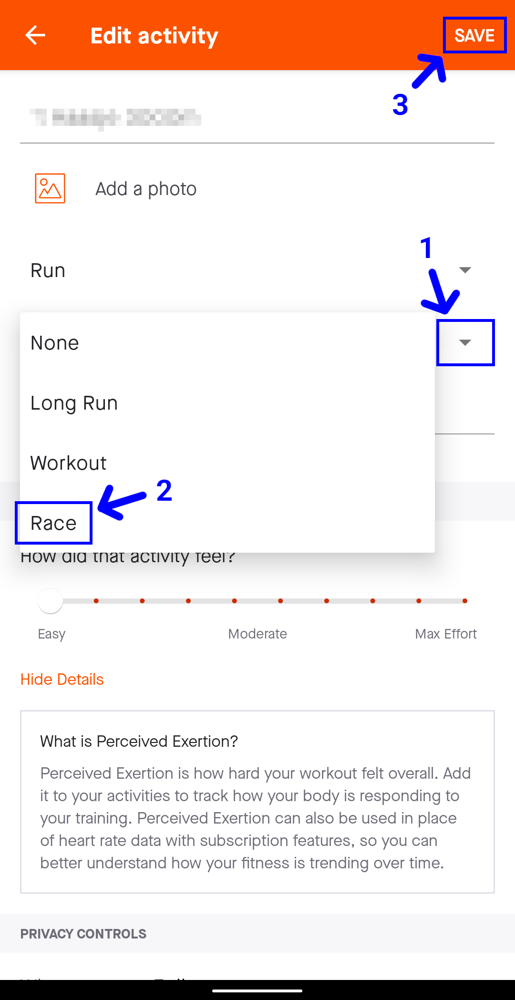
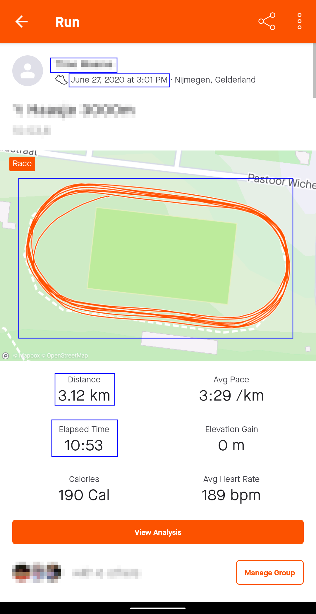

Screenshotuitleg voor Strava
We raden je aan om Strava te gebruiken. Gebruik de stappen hieronder om een correct screenshot te maken vanuit de app.
Om de verstreken tijd van een activiteit weer te geven moet de activiteit als wedstrijd worden gemarkeerd. Open hiervoor het menu.

Selecteer de optie bewerken.

Verander het type van de activiteit in een wedstrijd en sla de wijzigingen op.

Maak een screenshot van de activiteit. Merk op dat de verstreken tijd nu zichtbaar is, samen met de naam, datum en tijd, route en afstand.
